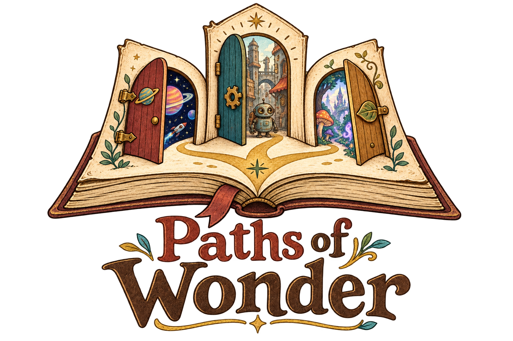
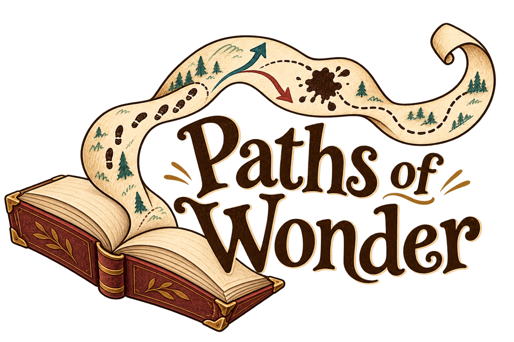
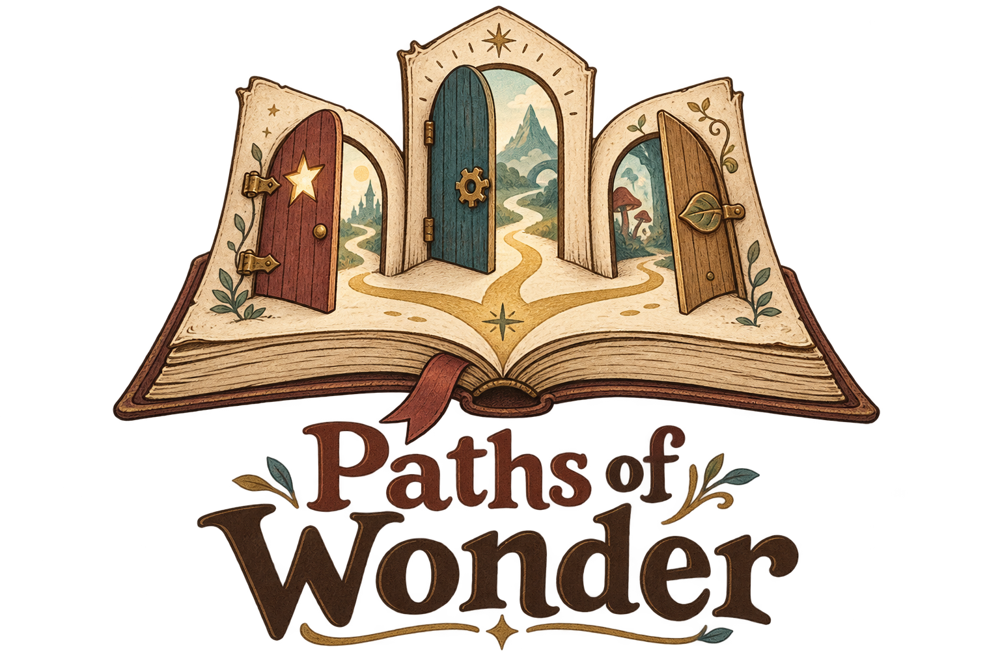
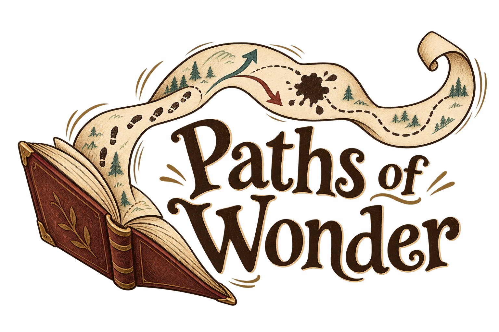
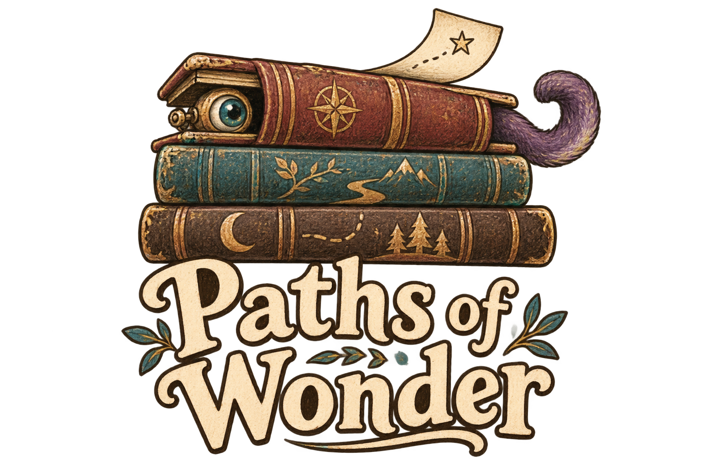

1. Doorway book · revisedSpace, a weathered robot city, and a mystical magical land: a door into each story.
3. Off the page · revisedA broader book with rounded page stacks and a natural center fold.
1. Choose a doorThree doors, three paths: the clearest expression of choosing your own adventure.
3. Off the pageA page becomes a winding map: energy, exploration, and unexpected detours.
4. A little mischiefStories refuse to stay inside their books: cozy, curious, and a little ridiculous.